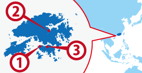

西環
西環 馬料水
馬料水 湾仔
湾仔
ワーホリ協定国一覧へ戻る

香港人気都市 BEST3
香港基本情報
| 首都 | Central and Western District |
|---|---|
| 言語 | Chinese, English |
| 面積 | 1,104 km²(世界180位) |
| 人口 | 7,053,189人(世界98位) |
| 通貨 | Hong Kong Dollar (HKD) |
＊2014 年10 月時点の数値です
| 日本時間 | Central and Western District |
|---|---|
 1月1日 09:00am |
1月1日 08:00am |
＊サマータイムの期間は時差が変動します
| 首都 | Central and Western District |
|---|---|
| 面積 | 1,104 km²(世界180位) |
| 人口 | 7,053,189人(世界98位) |
| 言語 | Chinese, English |
|---|---|
| 通貨 | Hong Kong Dollar (HKD) |
＊2014 年10 月時点の数値です |
|
日本との時差
| 日本時間 | Central and Western District |
|---|---|
|
1月1日 09:00am |
1月1日 08:00am |
＊サマータイムの期間は時差が変動します
香港ってどんな国？
香港人が自分たちで言うようにうるさいくらい良くしゃべる。飲茶文化を発展させたように外食文化が発展しており、家で料理をしないという家庭で驚いてはいけないキッチンがない家もある。 フリーポートとして日本企業も多く進出しておりそのビル群の夜景は100万ドルの夜景と呼ばれている。 都市部の若者文化は日本と類似しておりウェスタナイズされている。 マンゴーデザート店やドリアンが食べられるように熱帯地方の気候はトロピカルな食べ物が多く、ちょっと田舎方面に出向くとヤシの木やうっそうと茂った草木に都市部では感じられない香港が見える。 大陸中国には電車を利用し陸路で行ける。税関もあるが毎日買い物や仕事で行き来する人もいるほど行き易い。 発展し続ける香港と、今まさに建設ラッシュの中国を見比べるとそのギャップや貧困の差には感じることも多いだろう。 観光都市、アジアの流通ハブとして経済が発展している姿は日本の未来形かもしれない。 古くから中東やインドからの移民、イギリスの植民地時代と移民が多く、いろいろな人種がビジネスを通して英語を使っている。 ビジネスでは英語は出来て当たり前で香港を楽しむためには広東語も勉強しよう。
▼▼▼まずは無料セミナーへ！ワーキングホリデー＆留学の無料セミナーはこちら！▼▼▼